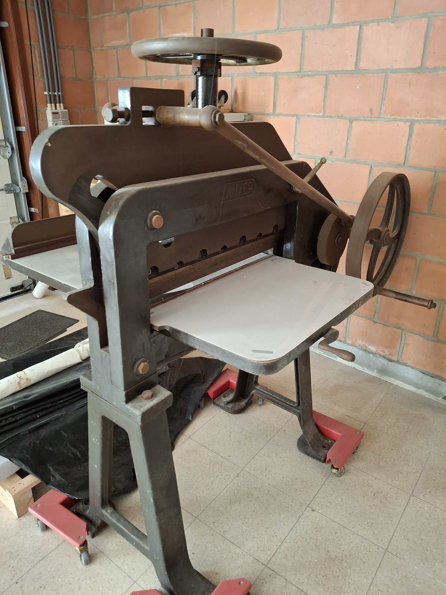
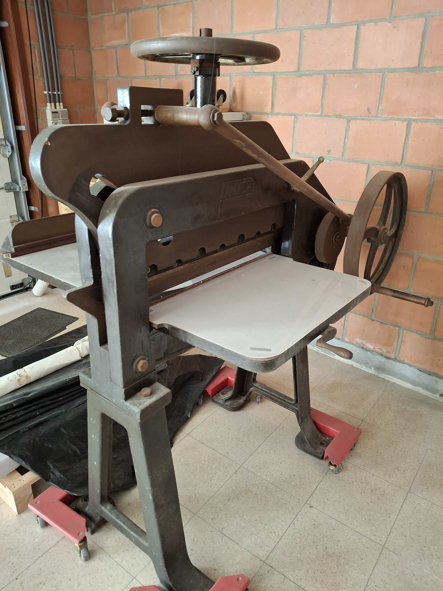

Notre société, forte de plus d’un demi-siècle d’activité, a consacré son savoir-faire à la photogravure et au prépresse, au service de l’imprimerie, du carton ondulé et même de l’impression de poches de perfusion. Aujourd’hui, l’activité s’arrête, mais il nous reste quelques machines anciennes, témoins précieux d’une histoire artisanale et industrielle. Nous espérons qu’elles trouveront un repreneur passionné, afin qu’elles continuent à vivre plutôt que de finir à la ferraille.
Massicot
Massicot AMVER d'époque – Lame de 70 cm – Pièce de collection et outil pour passionnés
Ce massicot de la marque AMVER est une véritable perle rare pour les amateurs de l'ancien. Avec sa lame de 70 cm, c'est une machine d'une autre époque, probablement du milieu du XXe siècle, conçue pour durer éternellement.
Loin des gadgets modernes, ce massicot est entièrement fabriqué en fonte d'acier, lui donnant une robustesse et un poids qui inspirent la confiance. Son système de serrage est actionné par une large roue en acier et un mécanisme cranté, et sa poignée en bois ajoute une touche d'authenticité et de charme, témoignage d'un savoir-faire artisanal révolu.
Plus qu'un simple outil, c'est un superbe objet de décoration qui apportera un cachet industriel et vintage unique à votre bureau, votre atelier, ou votre salon. Pour le collectionneur ou le passionné de reliure, il est prêt à reprendre du service pour des coupes précises et franches. Un mariage parfait entre l'esthétique du passé et la performance d'aujourd'hui.

 



Pantographe
Cette machine est un pantographe de gravure fabriqué par Hunter-Penrose Ltd, une entreprise britannique historique spécialisée dans l'équipement pour les arts graphiques et la photogravure. Les plaques de la machine indiquent qu'elle a été fournie par L. Geerts Matériel pour les Arts Graphiques, un distributeur belge, ce qui confirme son marché de l'époque.
Ces machines étaient utilisées pour graver des dessins, des logos et des textes sur des plaques de métal à partir d'un modèle plus grand. L'état actuel montre l'usure du temps, mais elle reste une pièce d'équipement fascinante pour les collectionneurs ou pour ceux qui s'intéressent aux techniques d'impression traditionnelles.
Photograveuse
Cette photograveuse, datant de plus de 65 ans, a servi près d’un demi-siècle dans nos ateliers pour la gravure de plaques en magnésium à l’aide d’acide. Elle fonctionne toujours parfaitement et témoigne d’un savoir-faire artisanal rare. Pour garantir un fonctionnement optimal, un groupe réfrigérant moderne de marque Blitzer (non d’origine) peut être fourni sur demande. Cette machine robuste et historique est idéale pour les passionnés de techniques d’impression traditionnelles ou les collectionneurs à la recherche d’un équipement authentique.